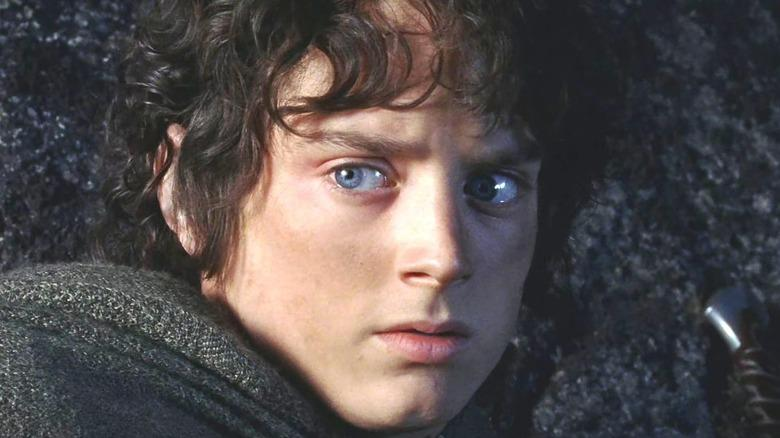
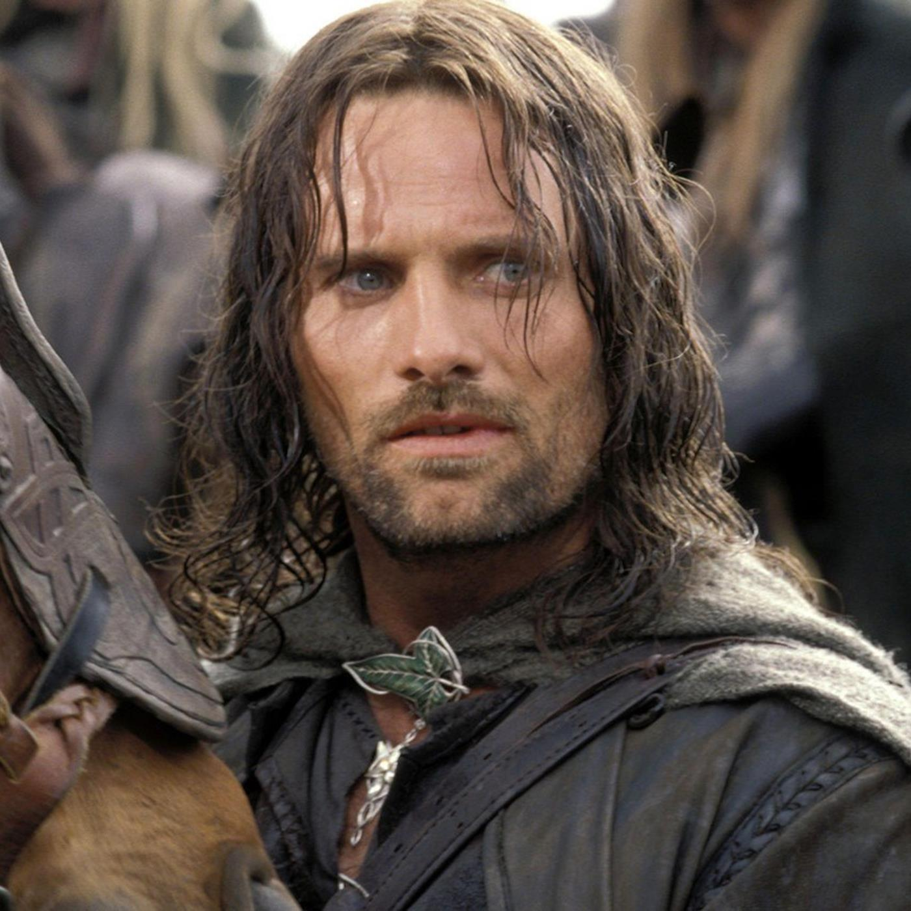
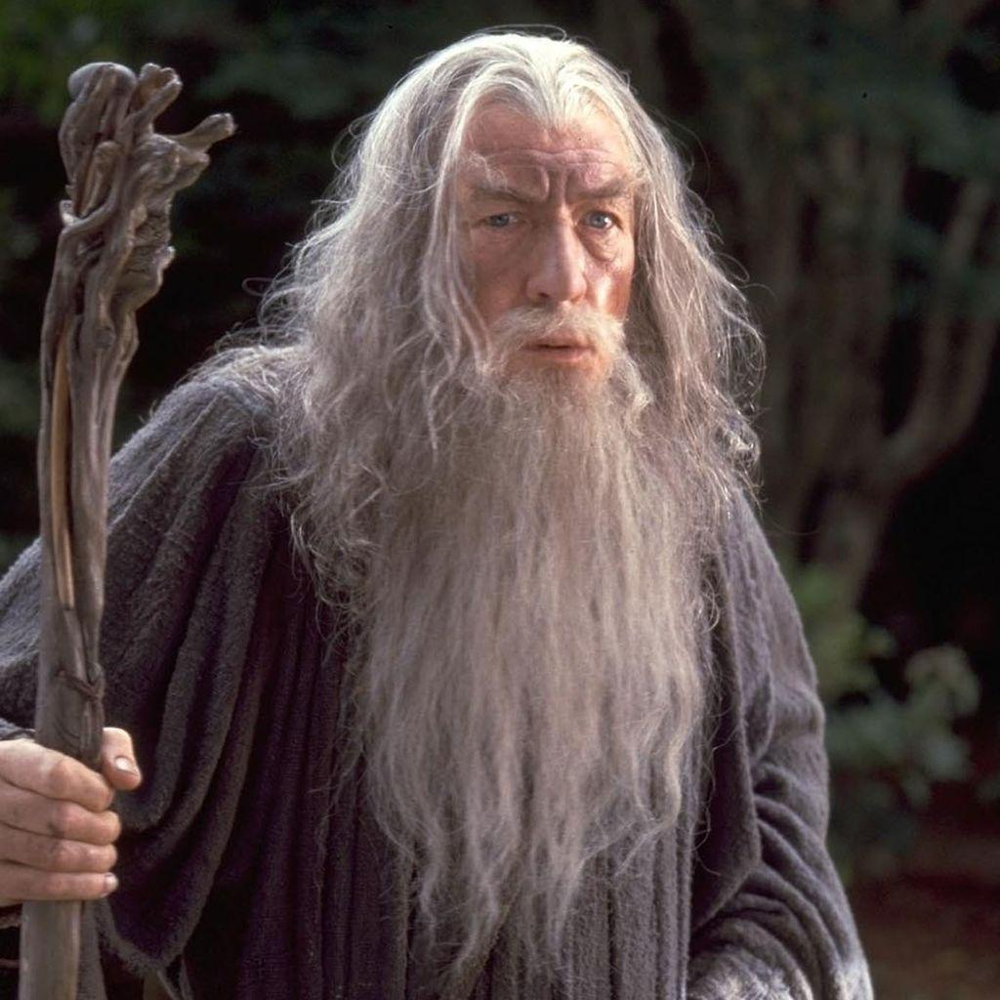
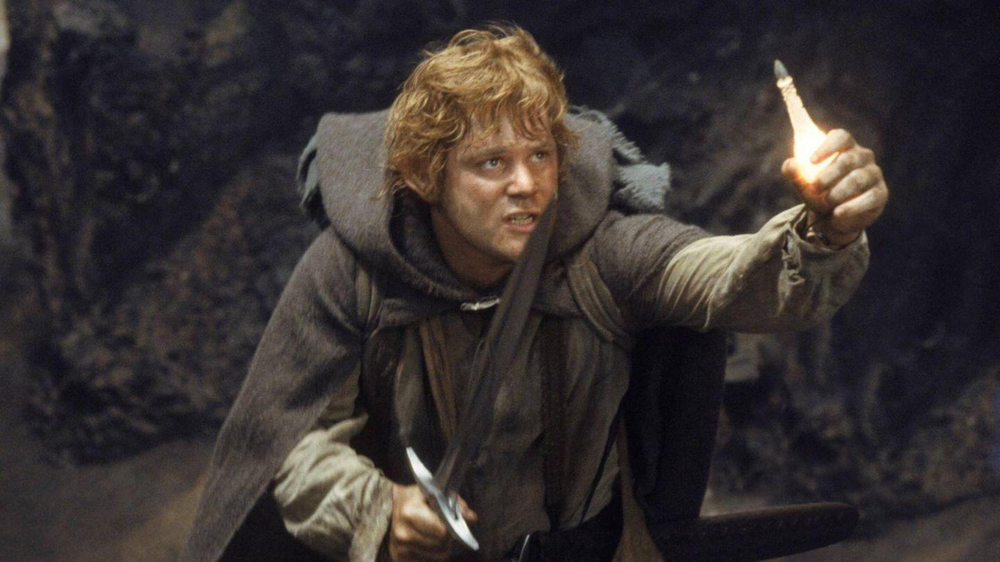
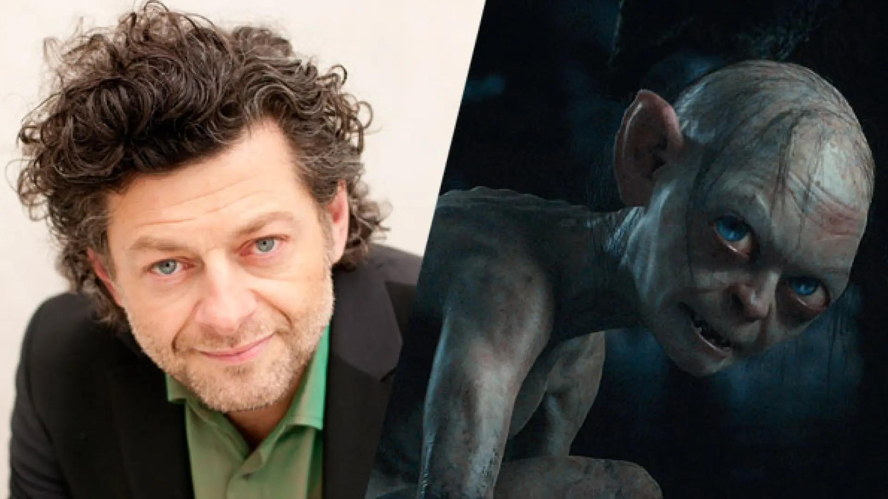
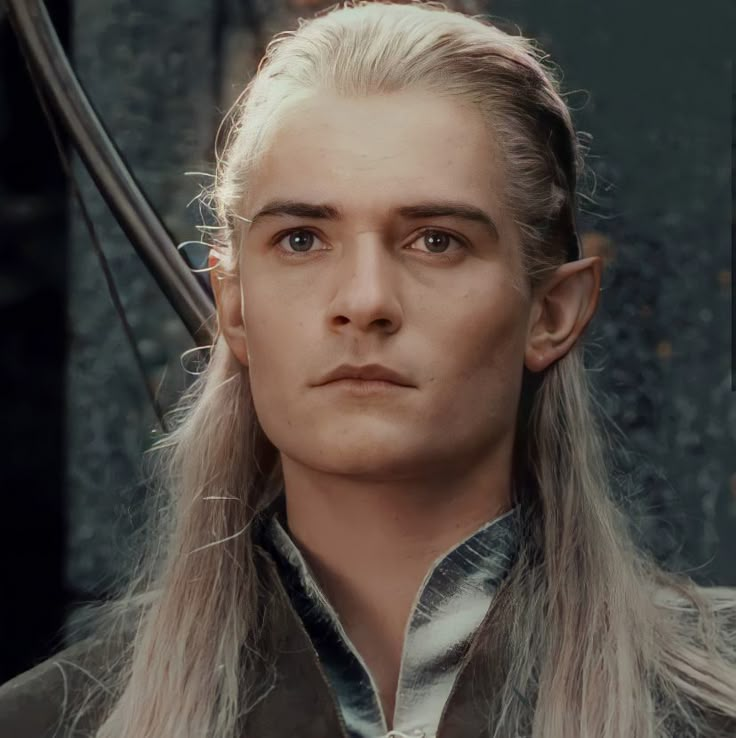
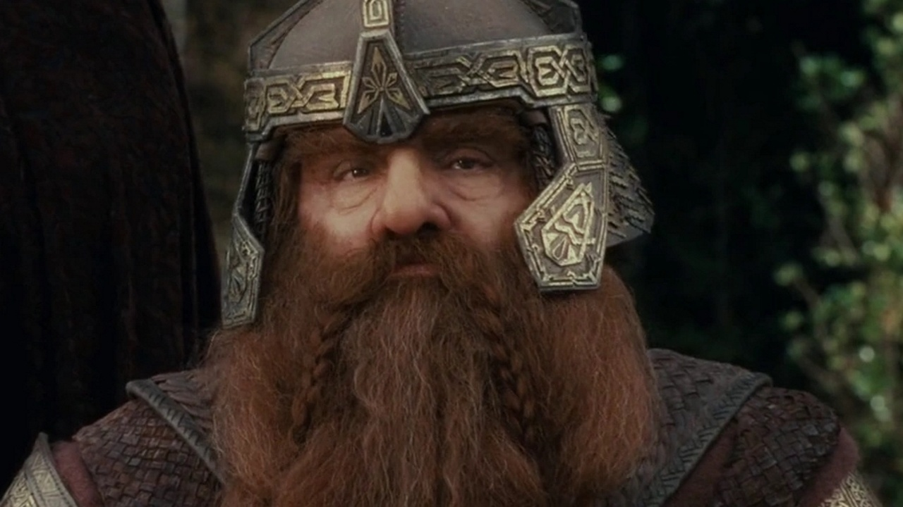

Elenco y Personajes
Elijah Wood — Frodo Bolsón

Un joven hobbit elegido para llevar el Anillo Único hasta Mordor. Su valentía y resistencia son fundamentales para el destino de la Tierra Media.

Viggo Mortensen — Aragorn
Heredero del trono de Gondor y hábil guerrero. A lo largo de la trilogía debe aceptar su destino y convertirse en el líder que la Tierra Media necesita.

Ian McKellen — Gandalf
Un poderoso mago y uno de los principales líderes contra Sauron. Guía y protege a Frodo y a sus compañeros durante gran parte de su viaje.

Sean Astin — Samwise Gamgee
El mejor amigo y compañero de viaje de Frodo. Su lealtad y determinación lo convierten en una pieza esencial para completar la misión.

Andy Serkis — Gollum
Una criatura consumida durante años por el poder del Anillo. Su obsesión con recuperarlo lo convierte en una figura fundamental en el camino de Frodo hacia Mordor.

Orlando Bloom — Legolas
Un elfo arquero perteneciente al reino de Bosque Negro. Forma parte de la Comunidad y lucha junto a Aragorn y Gimli contra las fuerzas de Sauron.

John Rhys-Davies — Gimli
Un guerrero enano que integra la Comunidad del Anillo. Su fuerza, coraje y particular relación con Legolas aportan tanto acción como momentos de humor.